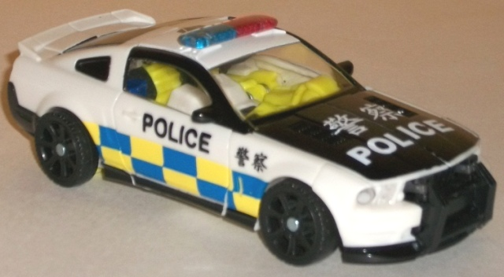
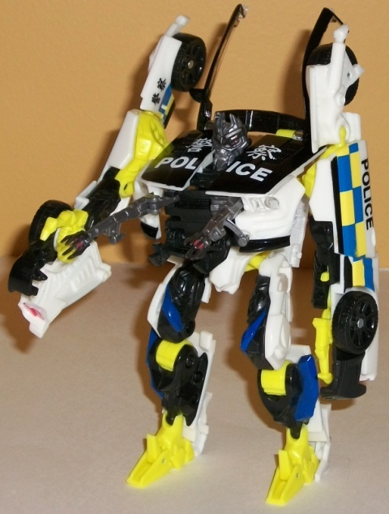
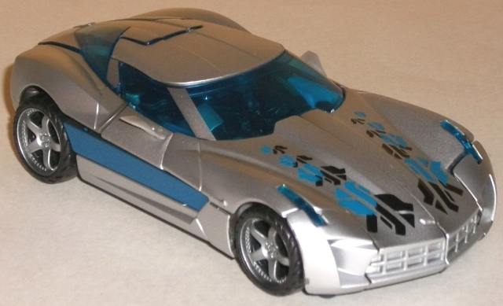
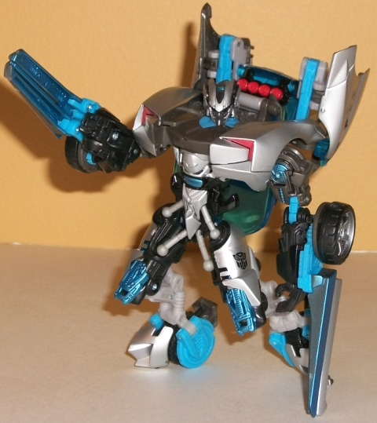

Hunters'
Rumble (Target Exclusive)
Hunters'
Rumble (Target Exclusive)
Set Price
: $20 U.S.
Overall Rating
: 8.9
(NOTE: Because this set is composed of repaints,
this is not a full-blown review. This mainly covers any changes made to
the set and the color scheme, and merely compares it to the original versions
of these molds. For a review on the original RotF deluxe Sideswipe mold,
go
here
. For a review on the original
TF movie deluxe Barricade mold, go
here
.)
Barricade


Allegiance
: Decepticon
Size
: Deluxe
Difficulty of Transformation
: Medium
Color Scheme
: White, black, bright
"safety" yellow, and some transparent red, transparent blue, clear plastic,
light red, silver, blue, dark blue, and gray
Individual Rating
: 8.0
Whereas most of the time
the movie toys have rather subdued decos, for this repaint of Barricade
they went in the completely opposite direction. This version's based on
a Hong Kong police car, and although it's rather accurate, man is it LOUD.
The white and black go together fairly well, as one would expect (though
white is, of course, the primary color this time as opposed to the black),
but another main color has been added to the mix, and it's a VERY bright
yellow. There's also some blue patches amidst the yellow, and although
those two colors don't clash, I do wish the blue was more prominent on
this toy as opposed to the yellow. The blue contrasts well with ALL the
colors, whereas that yellow is really just an ugly, loud color. (Yes, it's
technically accurate, but still... ick.) The chinese "POLICE" symbols help
to make it obvious where this version of Barricade is patrolling the streets,
and the paint apps on his face are also very well-done, with the transparent
red optics coming off as quite menacing (which is certainly in contrast
to the rest of his body in this scheme). One last thing to mention about
this redeco is that the windows are completely transparent (thus allowing
one to see his bright robot innards more easily, unfortunately), but his
rear windows are painted black-- go fig.
This version of Barricade
has the
Interrogrator
modifications, but
otherwise no mold changes have been made to this toy from previous versions;
however, the mold is seeing a bit of degradation by this point, particularly
with the punching action, which activates at the drop of a hat now.
Barricade Tech Specs
:
Strength: 8.0
Intelligence: 5.0
Speed: 8.0
Endurance: 6.0
Rank: 5.0
Courage: 5.0
Fireblast: 5.0
Skill: 4.0
Sideswipe


Allegiance
: Autobot
Size
: Deluxe
Difficulty of Transformation
: Medium
Color Scheme
: Silver, black, transparent
blue, and some gunmetal gray, chalky light sky blue, light red, light milky
gray, and metallic light blue
Individual Rating
: 9.8
This redeco of Sideswipe
more or less has the same basic color scheme, but with more added. That
lovely silver paint all over the vehicle mode is still there, but with
some really nice metallic blue stripes down the sides, which add a bit
more contrast. There's also some blue-and-black patterns along the sides
of Sideswipe's hood, though I'm not entirely sure what they're supposed
to be-- some kind of bizarre tire-track stencil? The same Cyberglyphic
pattern repeated in different colors? Weird. Well, it looks cool anyways,
and again, adds a bit more to the mode. There's also been a silver paint
app added down the front sides of the window, so that it looks like Sideswipe
has his front window piece seperated into three separate windows. The transparent
shade of blue used for the windows is also a tad lighter on this version
when compared to the original. The robot mode doesn't have as many different
paint apps as the vehicle mode, but the color layout's a bit different--
namely, some black has been added to parts, like the inner thights and
upper arms. This, combined with the chalky light blue plastic used for
many of the "connecting piece" bits, really helps to vary up the mode a
bit more. Yes, that boring light milky gray is still there, but the added
variation-- the blue, in particular-- really makes the color scheme pop
that extra bit.
No mold changes have
been made to Hunters' Rumble Sideswipe.
Sideswipe Tech Specs
:
Strength: 8.0
Intelligence: 7.0
Speed: 8.0
Endurance: 6.0
Rank: 5.0
Courage: 7.0
Fireblast: 3.0
Skill: 9.0
I'm of a bit of a split
opinion when it comes to the "Hunters' Rumble" two-pack. On the one hand,
the Barricade deco, while technically accurate in its scheme as Hong Kong
police car, is really loud and bright, and just not suiting to Barricade
at all. On the other hand, the Sideswipe redeco really adds some neat details
and quite a bit of contrast to that robot mode of his, making an already
excellent mold even better. If you don't have either mold and rather like
the "rescue vehicle" schemes quite a bit, regardless of how loud the colors
are, then this is a fairly easy recommendation. Otherwise, unless you're
a particular fan of the characters this is probably something you can pass
up on.
Hunters' Rumble Bio
:
After a days-long game of cat-and-mouse,
two powerful, lone warriors are about to come together in explosive, devastating
combat. Sideswipe and Barricade have been stalking each other for a long
time, each determined to catch the other unaware. But now, conflict is
inevitable, and only the most skillful warrior will walk away.
Reviews by Beastbot
Back to
Transformers: Autobot Alliance Index